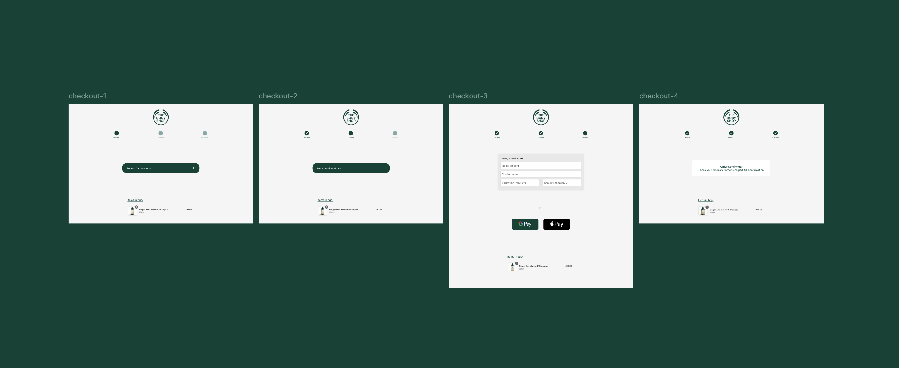
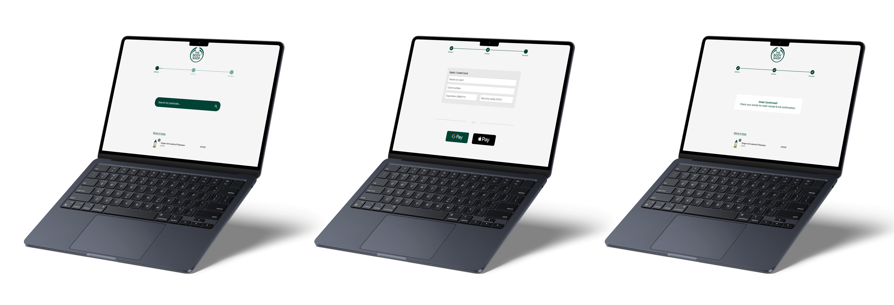
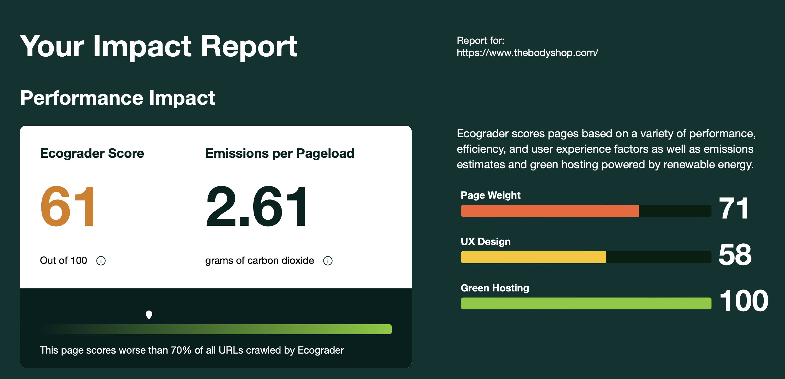
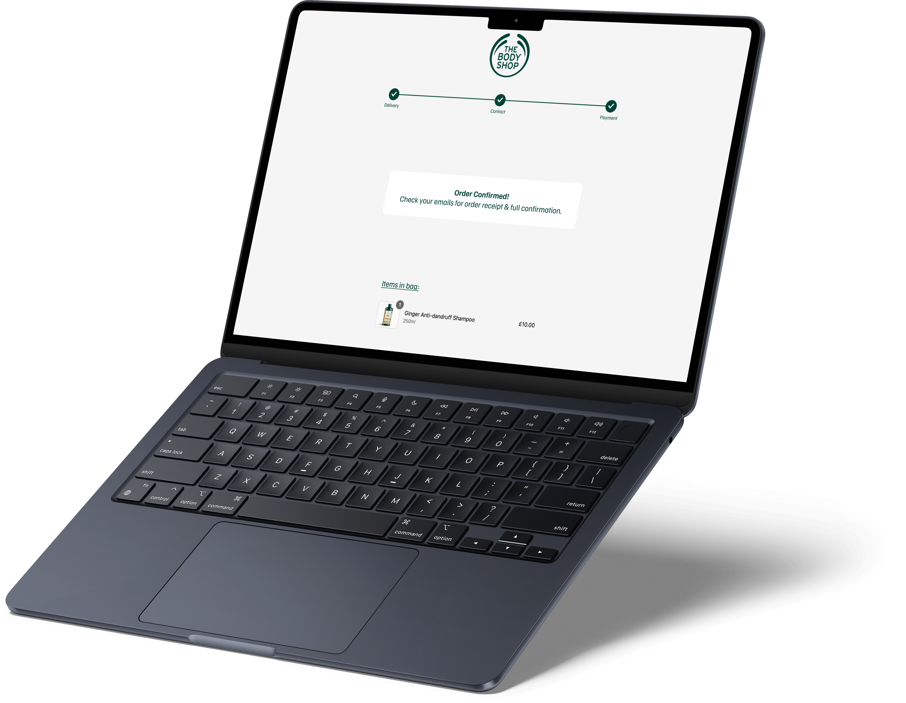

ABOUT THE PROJECT
Designing for
Low Carbon Emission
This project was completed as part of my User Experience Design Practice module in second
year of university. The brief was
to redesign an existing website to reduce its carbon impact while improving user experience.
I selected The Body Shop, an eco-conscious cosmetics brand whose current website surprisingly
performs poorly in carbon efficiency.
My goal was to redesign the checkout experience with a focus on clarity, lower cognitive load,
and low-carbon UX principles.
ROLE
UX/UI Design
UX Researcher
CLIENT
University project
The Body Shop
DATE
January 2025 - April 2025

Business Needs
The Body Shop’s mission is built around ethical, sustainable, and environmentally friendly practices.
Despite their environmental messaging, their digital presence does not reflect sustainable design principles. This created a clear opportunity: improve the user experience while reducing environmental impact.
WebsiteCarbon revealed:
- 0.80g of CO₂ produced per page view
- Less eco-friendly than 68% of tested websites
COLOURS
#014235
#F5F5F5
KPIs & Metrics
- KPIs
- - Number of Orders
- - Order Frequency
- Behavioural Metrics
- - Abandonment rate
- - Error rate
- - Average session length
- Attitudinal Metrics
- - System Usability Scale (SUS)
- - Net Promoter Score (NPS)
- - User satisfaction comments
These metrics allowed measurable comparison between the current checkout flow and my redesigned prototype.
Identifying The Problem
The Body Shop’s current checkout suffered from:
- Visual Issues
- - Crowded screens
- - Lack of progress indicators
- - Heavy layouts contributing to high carbon emissions
- Interaction Issues
- - No persistent “items in bag” visibility
- - No clear feedback on user input
- - Significant cognitive load
- Performance & Carbon Issues
- - High carbon overhead from unnecessary media, images, and page loads
- - Excessive page complexity causing additional energy usage
- - Energy-inefficient colors and non-essential interactive elements
Since checkout pages are high-traffic, optimising them can significantly reduce cumulative carbon impact.

Competitor Analysis
I analysed two direct competitors (LUSH and The Ordinary) and one indirect (Patagonia).
LUSH’s website produced 0.38g CO₂ per visit, less than half of The Body Shop’s footprint. This validated the redesign opportunity.
Key Insights:
- LUSH: Strong ethical storytelling and a “package-free” section, but inconsistent UX.
- The Ordinary: Clean and functional, though overwhelming due to dense information.
COMPETITORS
LUSH
The Ordinary
How I Solved The Problem
- Visual Issues
- - Crowded screens → Reduced page complexity, minimal text-based layouts
- - Lack of progress indicators → Added clear, persistent progress bar
- - Heavy layouts contributing to high carbon emissions → Simplified layouts, removed videos/animations
- Interaction Issues
- - No persistent “items in bag” visibility → Added persistent item summary on each screen
- - No clear feedback on user input → Added validation and microcopy; further micro-explanations suggested
- - Significant cognitive load → Streamlined steps, reduced form fields, clear IA
- Performance & Carbon Issues
- - High carbon overhead from unnecessary media, images, and page loads → Optimized images, reduced media, simplified checkout steps
- - Excessive page complexity causing additional energy usage → Three-step checkout with lighter pages
- - Energy-inefficient colors and non-essential interactive elements → Applied low-energy color palette and removed non-essential interactions
